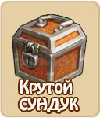

Получено: файл; исходный URL. Иллюстрация найдена на отдельной странице материала ZOMBIA; некоторые alt-подписи источника ошибочны, сопоставление по странице и имени файла. Для недоступного домена zombia.ru взят файл по тому же пути на zombi.at.ua; побайтовая идентичность не проверена. Страница: источник.
Крутой сундук
ВКонтакте; данные из ZOMBIA; 05 Марта 2013, 18:20- Тип
- нет данных
- Покупка
- нет данных
- Продажа
- нет данных
- Как получить
- нет данных
- Применение
- нет данных
- Особенности
- нет данных
- Версия и дата
- ВКонтакте; данные из ZOMBIA; 05 Марта 2013, 18:20
Данные по источнику · ВКонтакте, ZOMBIA · 05 Марта 2013, 18:20; дата редакции не установлена
Предварительно: Данные одной исторической фанатской страницы; цифры и подписи изображений требуют сверки. Описание и условия сохранены по колонкам без додумывания.. Требуется сверка.
- Описание материала
- Стоимость: 250 голосов
- Что внутри
- - 2 700 Зомбаксов; - 1 000 000 монет; - 1000 Изумрудных сердец.


Связанные сущности
нет проверенных связей — требуется сверка.